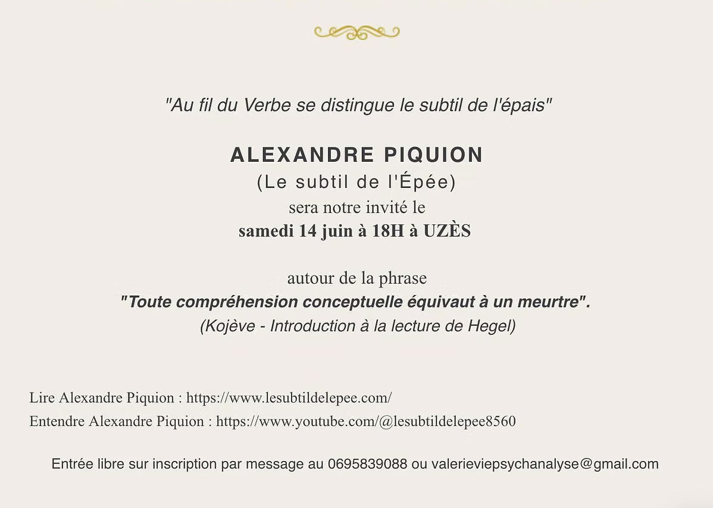
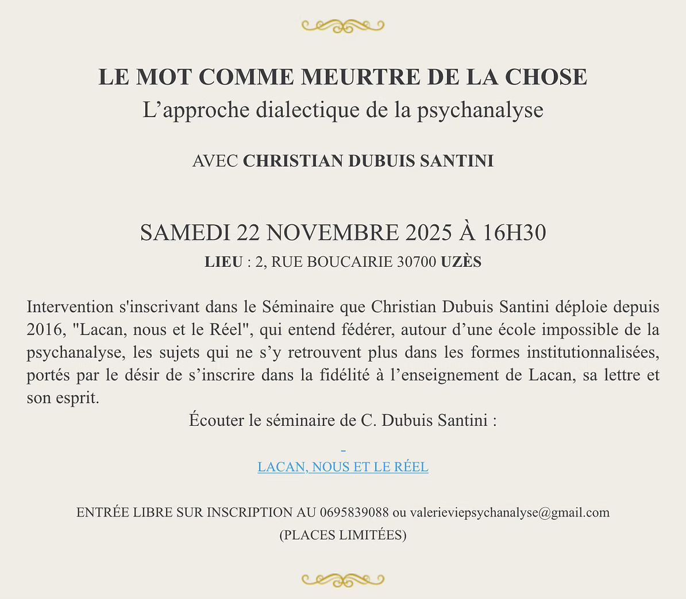
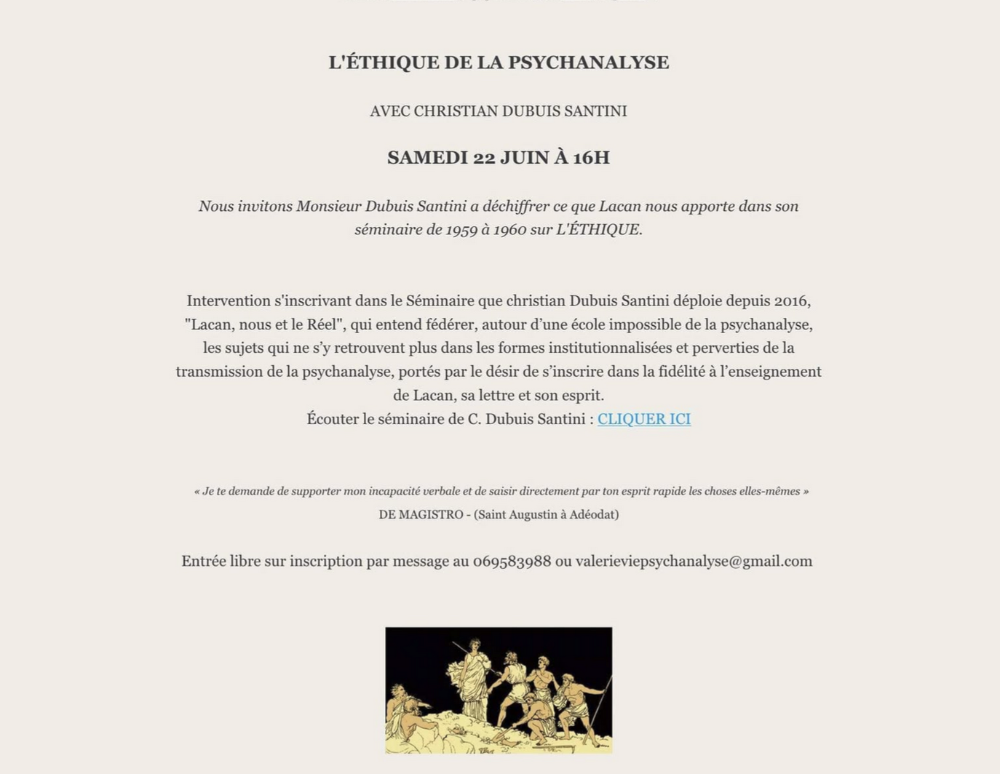
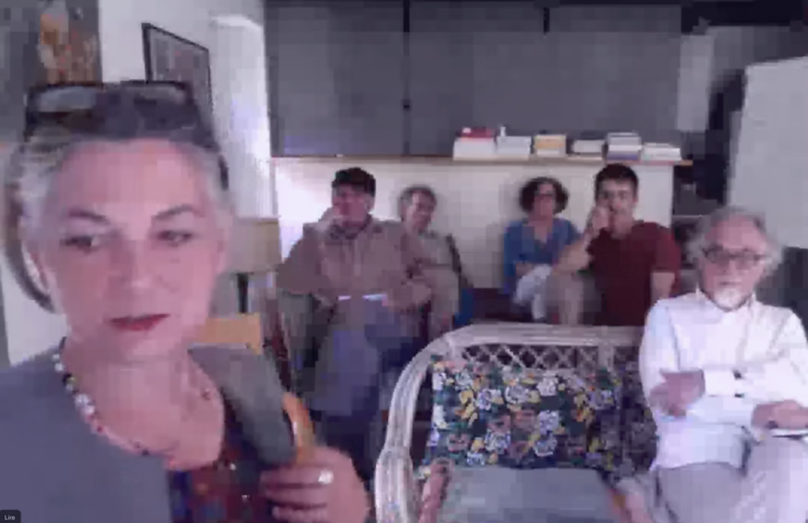
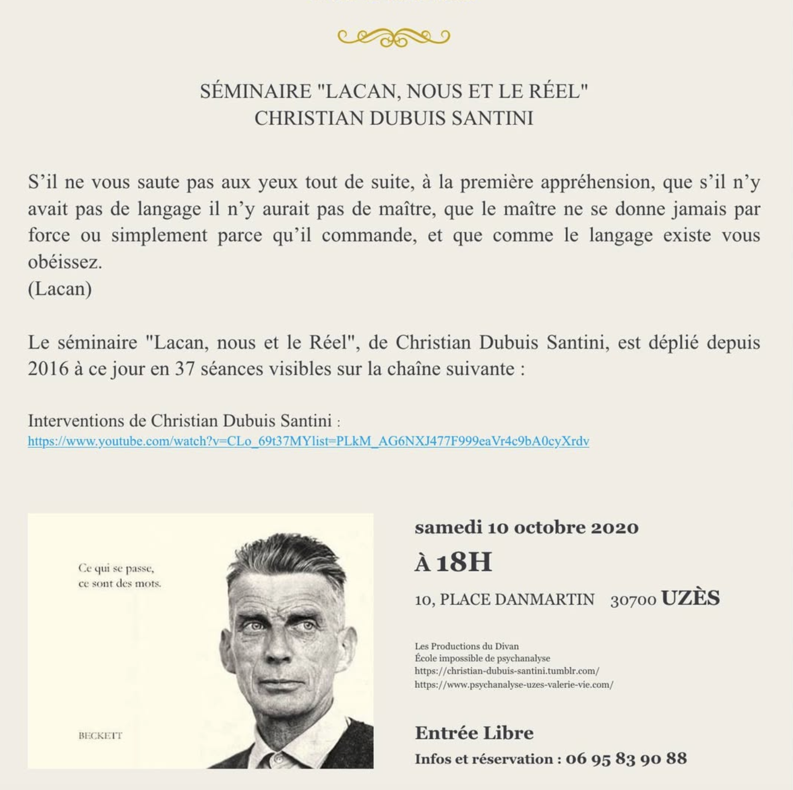

Séminaires 2025 à Uzès


Vidéo du séminaire de Christian Dubuis Santini
Vidéo du séminaire d'Alexandre Piquion
Questions d'après-séance du séminaire d'Alexandre Piquion
Dissolution – Le séminaire de Caracas (12 juillet 1980)
Intégrale du séminaire de dissolution de Lacan. Lecture, écoute et discussion autour de ce texte fondateur. Entrée libre sur inscription. Places limitées.
Informations et inscriptions : 06 95 83 90 88 ou par email
Séminaires 2024 à Uzès

Vidéo du séminaire de Christian Dubuis Santini
Séminaires 2023 à Uzès
Troisième sexe · Nœud Borroméen généralisé · Lilith
Un espace où gît la continuité d'une écriture pour ceux soucieux d'une tenue dans un semblant et d'un discours qui n'en serait pas. Ces journées de travail se déroulent autour de la lecture et s'accompagnent d'intervenants au fil de l'année.
Pourquoi n'y aurait-il pas un troisième sexe ? Tout ça vient de ce que j'ai étudié le borroméen généralisé. Le borroméen généralisé, il va de soi que je n'y comprends rien, je m'embrouille…Jacques Lacan – La Topologie et le Temps, 13 mars 1979

Séminaires 2022 à Uzès
Colloque 2021 – Collège des Humanités · Montpellier
L'Amour selon Lacan
Lacan a beaucoup parlé de l'amour. Il commence par l'amour narcissique, puis en fait un pacte symbolique, pour le développer vers « donner ce qu'on n'a pas à quelqu'un qui n'en veut pas ». L'amour vient en suppléance à ce rapport qui n'existe pas.
Texte de Marc Lévy
Séminaires 2020 à Uzès

Vidéo du séminaire de Christian Dubuis Santini
« Comment devenir psychanalyste et le rester » – Patrick Valas
Avec le soutien de la Fondation de la Psychanalyse. Questionnons ce qu'il doit en être de l'analyste quant à son propre désir.
Entrée libre · Infos : 06 95 83 90 88
Colloques & Journées passées
Collège des Humanités – « Parler… c'est mentir »
La question de la vérité posée aux philosophes et autres penseurs, à partir de Freud et Lacan.
ECF J48 – « Gai, gai, marions-nous ! La sexualité et le mariage dans l'expérience psychanalytique »
48e Journées de l'École de la Cause Freudienne, sous la direction de Laura Sokolowsky et Éric Zuliani.
PIPOL 7 – « Victime ! Comment y échapper ? »
3e Congrès européen de psychanalyse. L'expérience de la psychanalyse dégage un espace où le fantasme débouche sur un traitement du réel.
« Lacan à l'Opéra » – Séminaire Fondation de la Psychanalyse
Organisé par Jean Charmoille, psychiatre, psychanalyste, ténor dramatique.
La voix colorée, qui chante à l'opéra, suggère-t-elle qu'il n'y a dans le sexe, comme le suppose Lacan, rien de plus que l'être de la couleur, soit femme couleur d'homme et/ou homme couleur de femme ?
« Le travail du négatif » – Rencontre avec Agnès Benedetti
Séminaire de l'association l'@psychanalyse.
« Le travail du négatif, dialectique et vide médian dans l'acte créateur. »
Entrée libre. Infos : apsychanalyse@gmail.com · apsychanalyse.org
Séminaires 2019–2020 – Corpo Freudiano Paris
« Le Fantasme » – Pour une pratique de la psychanalyse, de Freud à Lacan
« La valeur de la psychanalyse, c'est d'opérer sur le fantasme. » (Lacan, 1967)
Textes de travail : Freud (Le maniement de l'interprétation de rêves, La dynamique de transfert, Remémorer répéter et élaborer, Observations sur l'amour de transfert) · Lacan (Les écrits techniques de Freud, 1953–1954).
« Comment devenir Psychanalyste et le rester » – Séminaire Récréation avec Patrick Valas
Freud c'est un nom rigolard. Kraft durch Freud ! C'est tout un programme ! C'est le saut le plus rigolard de la sainte farce de l'histoire.Jacques Lacan, Encore, Leçon VII
On développera dans cette session le statut de l'interprétation dans la pratique analytique.
ECF J46 – « L'Objet Regard »
L'image a envahi le monde avec une puissance inégalée. L'apparence, l'être, la rue, le métro, les relations à l'autre, le social, la sexualité… Rien n'y échappe. « Le spectacle du monde, en ce sens, nous apparaît comme omnivoyeur. » (Jacques Lacan)
NLS – New Lacanian School of Psychoanalysis · « Moments de Crise »
Le temps est la substance dont je suis fait. Le temps est un fleuve qui m'emporte, mais je suis le fleuve : c'est un tigre qui me dévore mais je suis le tigre ; c'est un feu qui me consume mais je suis le feu.Jorge Luis Borges